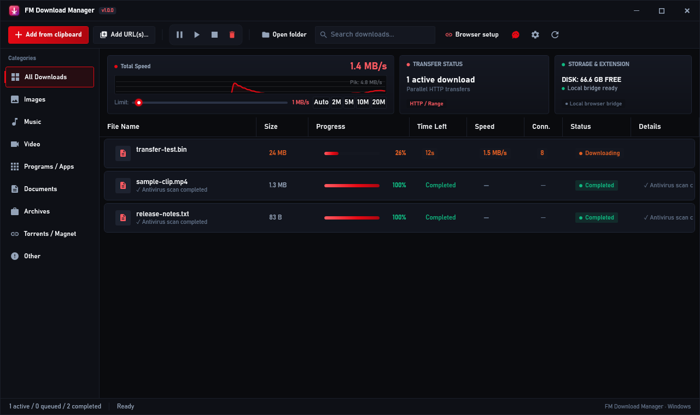
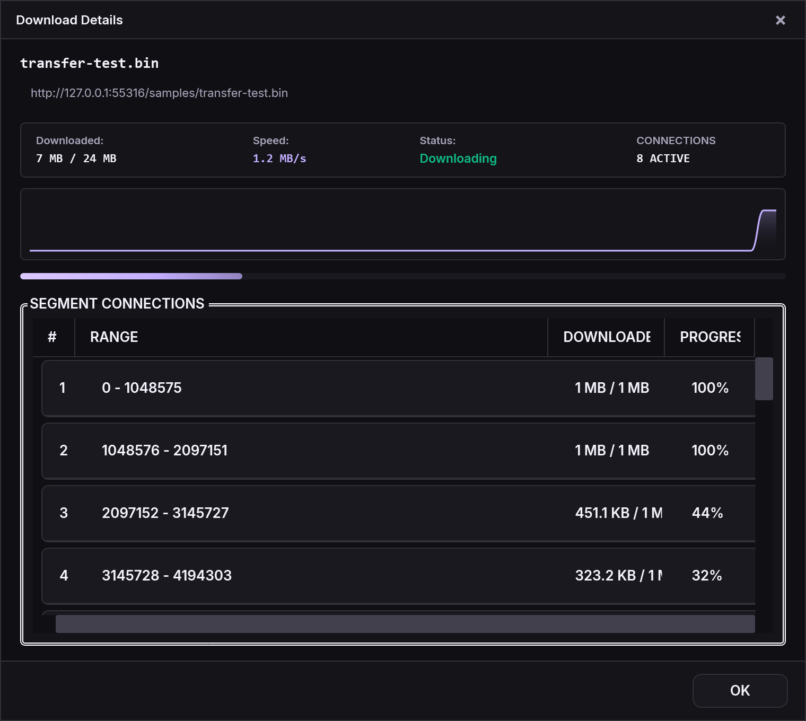

Aktarımları yönetin.
Paralel HTTP bağlantıları, kuyruk, hız sınırı ve uygun sunucularda kaldığı yerden devam etme.
Dosyaları, medya indirmelerini ve torrent işlerini tek pencereden yönetin. Windows için geliştirilen açık kaynak bir masaüstü uygulaması.
Windows 10 / 11 · x64 · MIT lisansı

Güncel WPF arayüzü, gerçek yerel test aktarımlarıyla oluşturuldu. Hız ve ilerleme verileri simülasyon değildir.
Paralel HTTP bağlantıları, kuyruk, hız sınırı ve uygun sunucularda kaldığı yerden devam etme.
yt-dlp ve FFmpeg ile desteklenen video siteleri, HLS/DASH akışları, ses çıkarma ve altyazı seçenekleri.
MonoTorrent üzerinden magnet ve torrent dosyaları. İndirme hız sınırı ve duraklat/devam et desteği.
Hız, sunucu ve bağlantı koşullarına bağlıdır. Medya desteği kaynağa göre değişir; her sitede çalışma garantisi verilmez.
Toplam ilerlemeyi ve her bağlantının bayt aralığını izleyin. Açık/koyu temayı ve vurgu rengini seçin; Türkçe veya İngilizce kullanın.

Windows x64 kurulumunu indirin. .NET çalışma zamanı ve medya araçları pakete dâhildir.
Dosya adresi, desteklenen medya adresi veya magnet bağlantısı ekleyin. Torrent dosyalarını da açabilirsiniz.
Paketlenmemiş eklentiyi Chrome/Edge/Brave'e yükleyin ve uygulamadaki Tarayıcı kurulumu ekranından eşleştirin.